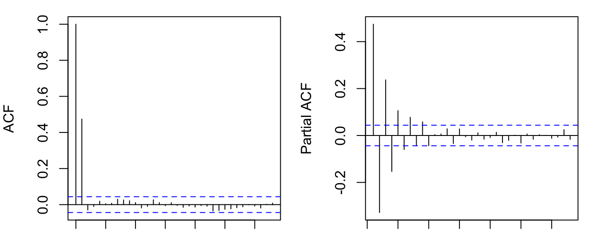

y = arima.sim(list(ma=0.8), n=2000)
par(mfrow=c(1,2), mar=c(1,4,1,1))
acf(y); pacf(y)

Again, let’s start with the simplest moving average model. A first-order moving average process, or MA(1), is defined as
\[ y_t = \mu + \epsilon_t + \theta\epsilon_{t-1}, \tag{7.1}\]
where \(\{\epsilon_t\} \sim \text{WN}(0, \sigma^2)\) are uncorrelated innovations. The MA model says the current value \(y_t\) is a moving average of past innovations (in MA(1), the weight on \(\epsilon_{t-1}\) is \(\theta\)). MA models directly relate the observable variable to past innovations. If we know the past innvation \(\epsilon_{t-j}\), we can easily figure out its contribution to the outcome variable (unlike AR models where the effect of a past innovation is transmitted through \(y_{t-j},\dots,y_{t-1}\)). So MA models are the preferred analytic tool in many applications, despite it looks odd from the eyes of regression modelers. You may wonder how it is possible to estimate such a model. We will put off the estimation techniques to the next chapter.
It is clear that \(y_t\) has a constant mean, \(\mathbb{E}(y_t) = \mu\). We can omit the constant if we work with the demeaned series \(\tilde{y}_t = y_t - \mu\). Without loss of generality, we assume for the rest \(\{y_t\}\) has zero mean, so the model is simplified as
\[ y_t = \epsilon_t + \theta\epsilon_{t-1}. \tag{7.2}\]
Let’s compute its variance and covariances:
\[ \begin{aligned} \gamma_0 &= \text{var} (\epsilon_t + \theta\epsilon_{t-1}) = \text{var}(\epsilon_t) + \theta^2\text{var}(\epsilon_{t-1}) = (1+\theta^2)\sigma^2;\\ \gamma_1 &= \text{cov}(y_t, y_{t-1}) = \text{cov}(\epsilon_{t} + \theta\epsilon_{t-1}, \epsilon_{t-1} + \theta\epsilon_{t-2}) = \text{cov} (\theta\epsilon_{t-1}, \epsilon_{t-1} + \theta\epsilon_{t-2}) = \theta\sigma^2; \\ \gamma_2 &= \text{cov}(y_t, y_{t-2}) = \text{cov}(\epsilon_{t} + \theta\epsilon_{t-1}, \epsilon_{t-2} + \theta\epsilon_{t-3}) = 0; \\ &\vdots\\ \gamma_j &= 0 \text{ for } |j|\geq 2. \end{aligned} \]
It is clear that the MA(1) process is stationary. And the ACF cuts off after the first lag. Because more distant lags \(y_{t-k}\) are constituted by even more distant innovations \(\epsilon_{t-k}, \epsilon_{t-k-1}, ...\) which has no relevance for \(y_t\) given the MA(1) structure.
We have seen AR processes are equivalent to MA(\(\infty\)) processes. Similar results hold for MA models. Rewrite the MA(1) process with the lag operator, assuming \(|\theta| < 1\),
\[ y_t = (1 + \theta L) \epsilon_t \Leftrightarrow (1+\theta L)^{-1} y_t = \epsilon_t \Leftrightarrow \sum_{j=0}^{\infty} (-\theta)^j y_{t-j} = \epsilon_t. \]
That means an MA(1) is equivalent to an AR(\(\infty\)) process if \((1+\theta L)\) is invertible. This shows AR and MA are really the same family of models. The model AR or MA is chosen by parsimonious principle. For example, an AR model with many lags can possibly be modeled by a parsimonious MA model.
Since an MA(1) is equivalent to some AR(\(\infty\)) process, the PACF of an MA(1) should tail off gradually.
y = arima.sim(list(ma=0.8), n=2000)
par(mfrow=c(1,2), mar=c(1,4,1,1))
acf(y); pacf(y)If \(|\theta|>1\), \(\theta(L)\) is not invertible. Define another MA(1) process,
\[ y_t = \epsilon_t + \theta^{-1}\epsilon_{t-1},\quad\epsilon_t\sim\text{WN}(0,\theta^2\sigma^2). \]
We can verify that its variance and covariances are exactly the same as Equation 7.2. For non-invertible MA process, as long as \(\theta(L)\) avoids unit root, we can always find an invertible process that shares the same ACF. This means, for a stationary MA process, it makes no harm to just assume it is invertible.
A \(q\)-th order moving average, or MA(\(q\)) process, is written as
\[ y_t = \mu + \epsilon_t + \theta_1\epsilon_{t-1} + \dots + \theta_q\epsilon_{t-q}, \tag{7.3}\]
where \(\{\epsilon_t\} \sim \text{WN}(0, \sigma^2)\).
Proposition 7.1 An MA(\(q\)) process is stationary.
Proof. We will show that the mean, variance and covariances of MA(\(q\)) are all invariant with time.
\[ \mathbb{E}(y_t)= \mu. \]
Assume for the rest, \(\{y_t\}\) is demeaned.
\[ \begin{aligned} \gamma_0 &= \mathbb{E}(y_t^2) = \mathbb{E}[(\epsilon_t + \theta_1\epsilon_{t-1} + \dots + \theta_q\epsilon_{t-q})^2] \\ &= \mathbb{E}[\epsilon^2] + \theta_1^2\mathbb{E}[\epsilon_{t-1}^2] + \dots + \theta_q^2\mathbb{E}[\epsilon_{t-q}^2] \\ &= (1+\theta_1^2+\dots+\theta_q^2)\sigma^2; \\ \gamma_1 &= \mathbb{E}[y_ty_{t-1}] = \mathbb{E}[(\epsilon_t + \theta_1\epsilon_{t-1} + \dots + \theta_q\epsilon_{t-q}) \\ &\hspace{10.2em} (\epsilon_{t-1} + \dots + \theta_{q-1}\epsilon_{t-q} + \theta_q\epsilon_{t-q-1})] \\ &= \theta_1\mathbb{E}[\epsilon_{t-1}^2] + \theta_2\theta_1\mathbb{E}[\epsilon_{t-2}^2] + \dots + \theta_q\theta_{q-1}\mathbb{E}[\epsilon_{t-q}^2] \\ &= (\theta_1 + \theta_2\theta_1 + \dots + \theta_q\theta_{q-1})\sigma^2;\\ &\vdots\\ \gamma_j &= \mathbb{E}[y_ty_{t-j}] = \mathbb{E}[(\epsilon_t + \dots + \theta_j\epsilon_{t-j} + \dots + \theta_q\epsilon_{t-q}) \\ &\hspace{12.5em} (\epsilon_{t-j} + \dots + \theta_{q-j}\epsilon_{t-q} + \dots + \theta_q\epsilon_{t-q-j})] \\ &= \theta_j\mathbb{E}[\epsilon_{t-j}^2] + \theta_{j+1}\theta_1\mathbb{E}[\epsilon_{t-j-1}^2] + \dots + \theta_q\theta_{q-j}\mathbb{E}[\epsilon_{t-q}^2] \\ &= (\theta_j + \theta_{j+1}\theta_1 + \dots + \theta_q\theta_{q-j})\sigma^2, \text{ for } j\leq q; \\ \gamma_j &= 0, \text{ for } j > q. \end{aligned} \]
Proposition 7.2 An MA(\(q\)) process is invertible iff the roots of \(\theta(z)\) are outside the unit circle.
Proposition 7.3 An MA(\(q\)) process is characterized by (i) an ACF that is (close to) zero after \(q\) lags; and (i) a PACF that is infinite in extend but tails of gradually.
MA(\(\infty\)) is a special case deserves attention. Partly because all ARMA processes can be reduced to MA(\(\infty\)) processes. In addition to MA(\(q\)) processes, we need more conditions for MA(\(\infty\)) to be stationary. Consider the variance of
\[ y_t = \sum_{j=0}^{\infty}\theta_j\epsilon_{t-j}, \]
\[ \gamma_0 = \mathbb{E}[y_t^2] = \mathbb{E}\left[\left(\sum_{j=0}^{\infty}\theta_j\epsilon_{t-j}\right)^2\right] = \left(\sum_{j=0}^{\infty}\theta_j^2\right)\sigma^2. \]
It only make sense if \(\sum_{j=0}^{\infty}\theta_j^2<\infty\). This property is called square summable.
Proposition 7.4 An MA(\(\infty\)) process is stationary if the coefficients \(\{\theta_j\}\) are square summable.